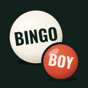

Bingo Boy support
The Original Bingo Breaker
Get help
Questions, problems or ideas: email bingoboyapp@gmail.com. If something went wrong, include your phone model (iPhone or Android) and what you were doing.
Common questions
Where are my books saved? On your phone only. Nothing is uploaded. Use Backup → Save a backup to keep a copy in Files or email it to yourself.
A number was read wrong. Open the book, tap Fix numbers on that page, tap the square and type the right number.
How do I pick what we're playing for? When a game starts, tick the patterns. Tap Patterns at the top of the game to change them at any time. Make your own under Settings → Make a custom pattern.
I ended a game by mistake. On the next game, tap "Ended game … by mistake? Go back to it." You can go back up to two games.